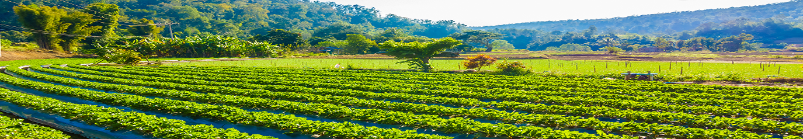
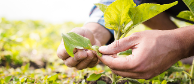
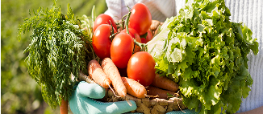
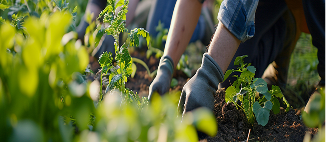

Cultivar, conectar, compartilhar. Na AgroPlant, cada colheita tem um destino certo, pegue seu produto fresquinho ou transforma-se em solidariedade. Acreditamos em um ciclo mais justo: do campo à mesa, com menos desperdício e mais propósito.